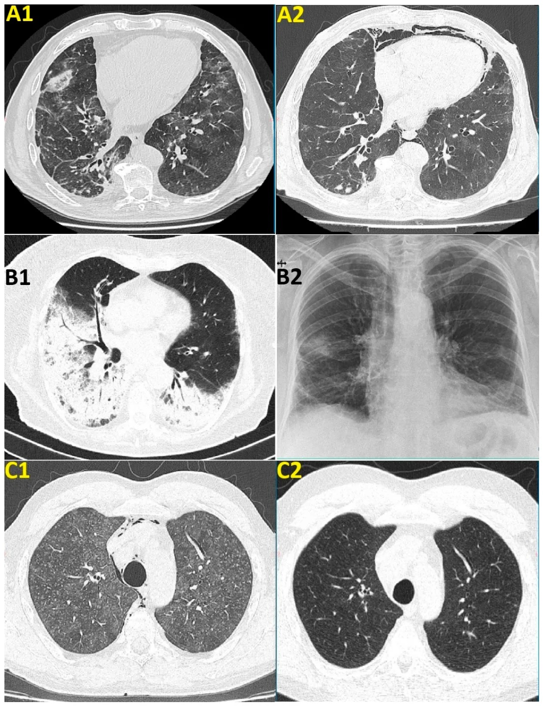
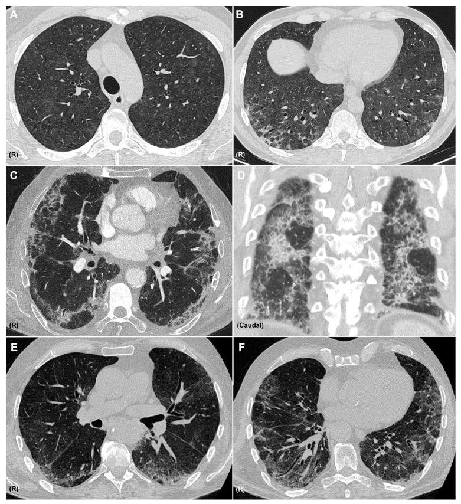
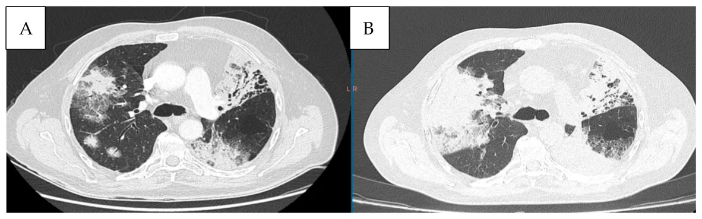

6147 — Viêm phổi do ức chế điểm kiểm soát miễn dịch ở trẻ / Checkpoint inhibitor pneumonitis (CIP) in children
Tags: pattern:gco pattern:to-chuc-hoa pattern:mo-lan-toa pattern:not pattern:day-vach vung:phoi score:CTCAE protocol:CT-nguc protocol:surveillance protocol:BAL
Mức chắc chắn (certainty): tổng hợp y văn (literature synthesis) — khung chẩn đoán, ngưỡng phân độ và xử trí lấy từ tổng quan CIP (Serra C et al., Medicina 2025, PMC12654511) và đoàn hệ 12 ca có hình ảnh (Toma CL et al., Diseases 2026, PMC13605366); dữ liệu ở trẻ chỉ gồm thử nghiệm pha I/II durvalumab + tremelimumab (Hargrave D et al., Front Oncol 2026, PMC13218898) và ca báo cáo HCC nhi (Zhong X et al., Front Oncol 2025, PMC12394043), nên phần lớn ngưỡng là ngoại suy từ người lớn — bài ghi rõ chỗ nào là suy luận.
Câu chốt của bài: trên CT theo dõi một trẻ đang dùng ICI, mờ phổi mới hai bên (GGO, đông đặc, nốt trung tâm tiểu thùy), không choán chỗ, xuất hiện sau 1–2 tháng phải được gọi là viêm phổi do ICI (checkpoint inhibitor pneumonitis, CIP) cho tới khi loại trừ nhiễm trùng — vì CIP là biến cố miễn dịch gây tử vong cao nhất (tới 35% số ca tử vong do điều trị), nhưng lại chỉ gặp ở 3–5% thử nghiệm và 13–19% thực hành. Ở trẻ, không có ngưỡng riêng đã kiểm chứng: dùng CTCAE v5.0 như người lớn, hạ ngưỡng nội soi phế quản khi có sốt vì nhiễm trùng là hàng phân biệt số một.
1. Tổng quan bệnh học – cơ chế hình ảnh: vì sao ICI làm phổi mờ và vì sao CT không đặc hiệu
- Cơ chế miễn dịch (pathophysiology): khối u "mượn" trục PD-1/PD-L1 để làm tê liệt tế bào T; ICI gỡ phanh đó → tế bào T hoạt hóa chống cả tự kháng nguyên phổi. Bằng chứng: tăng lympho T hoạt hóa và Th1 trong dịch rửa phế quản (BAL), giảm biệt hóa T điều hòa (Treg), tăng Th17/IL-17, tự kháng thể (anti-CD74, RF, ANA) và CRP/IL-6 tăng ở ca CIP. Microbiome phổi ở CIP cũng khác IPF/ung thư phổi và tương quan với lauroylcarnitine — chất làm tế bào T tiết cytokine viêm (Serra 2025).
- TẠI SAO các mẫu hình trông như vậy (vật lý + mô bệnh):
- GGO (ground-glass opacity): phế nang chỉ bị lấp một phần bằng dịch viêm/tế bào → đậm độ trung gian giữa khí (−900 HU) và mô mềm (+30 đến +60 HU) nhưng mạch máu vẫn nhìn xuyên qua — đây là lý do GGO "mờ mà không che".
- Đông đặc (consolidation): phế nang đầy hoàn toàn → +30 đến +60 HU, mạch máu bị che, thấy phế quản hơi; khi đông đặc dưới màng phổi + đối xứng thì nghĩ DAD/NSIP hơn là nhiễm khuẩn một thùy.
- Viêm phổi tổ chức hóa (organizing pneumonia, OP): mô hạt lấp phế nang và tiểu phế quản nhưng giữ nguyên khung phổi → đông đặc vá, phân bố quanh phế quản–mạch máu/ngoại vi, dấu atoll (reversed halo) và mờ quanh tiểu thùy (perilobular) — những đường đa giác dày hơn vách liên tiểu thùy.
- HP (hypersensitivity pneumonitis): viêm trung tâm tiểu thùy → nốt GGO trung tâm tiểu thùy bờ mờ + bẫy khí; đây là mẫu hình dễ bị đọc nhầm thành "di căn rải rác".
- NSIP: GGO + lưới + giãn phế quản co kéo (traction bronchiectasis), chừa dưới màng phổi (subpleural sparing), đáy phổi, đối xứng — dấu co kéo nghĩa là đã có xơ hóa, không còn thuần viêm.
- DAD: màng hyaline + phù phế nang → GGO lan rộng + đông đặc phụ thuộc + mất thể tích; sau 1–3 tuần chuyển lưới/giãn phế quản co kéo — mẫu hình tiên lượng xấu nhất.
- Phản ứng dạng sarcoid (sarcoid-like reaction): hạch rốn phổi/trung thất + nốt quanh bạch mạch, mô học u hạt không hoại tử; đây là dấu hiệu đáp ứng điều trị, không phải CIP, thường không cần điều trị — điểm khác biệt quyết định việc tiếp tục hay ngừng thuốc.
- Ngưỡng định lượng cốt lõi (người lớn, dùng làm chuẩn tham chiếu cho trẻ):
- Tần suất: thử nghiệm lâm sàng 3–5%, thực hành 13–19%; tới 1/3 ca là độ 3 trở lên (Serra 2025).
- Thời gian tiềm tàng: trung bình 1–2 tháng từ liều đầu; ca nặng thường trong 100–200 ngày; thể muộn (late-onset) xuất hiện > 3 tháng sau khi ngừng ICI, thể mạn kéo dài > 3 tháng sau ngừng thuốc.
- Tỉ lệ tử vong: CIP là irAE có tỉ lệ tử vong cao nhất, chiếm tới 35% tử vong do điều trị; 58% ca CIP có kèm irAE khác (da, đại tràng, gan, nội tiết).
- Mẫu hình CT hay gặp: OP 32%, HP 16%; DAD/OP lan rộng gắn với ca nặng, HP/NSIP gắn với ca nhẹ hơn.
- Yếu tố nguy cơ có số: bất thường mô kẽ trên CT nền (ILA) OR 6,29 (95% CI 2,34–16,92); phối hợp 2 ICI làm tăng gấp đôi tần suất và ca nặng hơn; xạ trị ngực triệt căn; COPD/hen; hút thuốc > 50 gói–năm.
- Ở trẻ (dữ liệu thật, ít): thử nghiệm pha I/II durvalumab + tremelimumab ở sarcoma/u đặc: 76% có biến cố không mong muốn liên quan điều trị, 19% độ 3–4, 1 ca viêm phổi độ 3 đáp ứng corticoid liều cao (Hargrave 2026). Ca HCC nhi 12 tuổi: viêm gan độ 3, dùng lại ICI → viêm phổi độ 2 phải ngừng hẳn (Zhong 2025) — minh họa rằng trẻ dung nạp ICI tốt hơn về tần suất nhưng không "miễn nhiễm", và dùng lại sau irAE gan là bối cảnh nguy cơ.
2. Mẫu hình + chẩn đoán phân biệt theo mẫu hình và vị trí (Gamut)
Mẫu hình chung: trẻ đang/đã dùng ICI (thường ≥ 2–4 tuần), mờ phổi mới hai bên, không có khối choán chỗ, không xẹp thùy — câu hỏi là "miễn dịch – nhiễm – u – xạ".
- Theo mẫu hình CT (6 nhóm): OP (ngoại vi/quanh phế quản, atoll, di chuyển) · NSIP (đáy phổi, chừa màng phổi, lưới) · HP (nốt trung tâm tiểu thùy + bẫy khí) · DAD (GGO lan tỏa + đông đặc phụ thuộc) · phản ứng sarcoid (hạch + nốt quanh bạch mạch) · không mẫu hình đặc hiệu (chỉ GGO khu trú — ca độ 1).
- Theo vị trí: ngoại vi/dưới màng phổi → OP, DAD; quanh phế quản–mạch máu → OP, sarcoid; trung tâm tiểu thùy lan tỏa → HP; một thùy → nghiêng nhiễm trùng, tắc phế quản, xạ trị; hai đáy đối xứng → NSIP, phù, thuốc khác.
- Theo bối cảnh trẻ:
- U hay gặp ở trẻ: Hodgkin (nivolumab), melanoma, sarcoma (u xương mô mềm), u nguyên bào thần kinh đệm tăng đột biến (hypermutant), u nguyên bào gan, u lympho — không có NSCLC, nên nền phổi lành hơn người lớn, nhưng phổi nhỏ hơn và trẻ thường nằm gây mê khi chụp.
- Điều trị phối hợp: ICI + hóa trị/xạ → mờ do nhiễm do giảm bạch cầu, viêm phổi do xạ, bệnh phổi do thuốc khác (bleomycin, methotrexate — xem bài 6130).
- Trẻ sau ghép tế bào gốc/CAR-T: thêm PJP, CMV, nấm — không được gọi CIP trước khi loại trừ.
- Gợi nhớ "OP – NSIP – HP – DAD – SARCOID": năm mẫu hình "miễn dịch", mỗi mẫu hình vẫn phải loại trừ nhiễm trước khi quy cho ICI.
3. Bảng so sánh phân biệt (ma trận đối chiếu)
| Thực thể (entity) | Hình ảnh điển hình | Chốt vào (rule-in) | Chốt loại (rule-out) | Gợi ý xác nhận |
|---|---|---|---|---|
| CIP – OP | Đông đặc vá ngoại vi/quanh phế quản, atoll, mờ quanh tiểu thùy, có thể di chuyển | Mờ hai bên + quan hệ thời gian với ICI + di chuyển/đáp ứng corticoid | Nốt đặc tròn lớn dần tại chỗ → u; một thùy + sốt cao → nhiễm | So CT nền; BAL loại trừ nhiễm; thử corticoid có kiểm soát |
| CIP – NSIP | GGO + lưới + giãn phế quản co kéo, chừa dưới màng phổi, đáy phổi, đối xứng | Đối xứng + không choán chỗ + tiến triển bán cấp | Mờ một bên, đẩy khe, có khối → u/di căn | HRCT thì hít vào; PFT (hạn chế, DLCO giảm) |
| CIP – HP | Nốt GGO trung tâm tiểu thùy bờ mờ + bẫy khí + mosaic | Nốt trung tâm tiểu thùy lan tỏa hai bên + bối cảnh ICI | Tree-in-bud, nốt theo thùy → nhiễm/hít sặc | BAL (lympho, CD8), loại trừ nhiễm |
| CIP – DAD | GGO lan rộng + đông đặc phụ thuộc + mất thể tích; sau 3 tuần xơ hóa | Khởi phát cấp, giảm oxy nhanh, hai bên, sau ICI | Chỉ một thùy, không suy hô hấp → không phải DAD | CT lặp 2–5 ngày; loại trừ phù/nhiễm; cân nhắc sinh thiết nếu đổi điều trị |
| Nhiễm trùng cơ hội (PJP, CMV, nấm) | PJP: GGO đối xứng + dày vách, ít tràn dịch; CMV: nốt nhỏ + quầng GGO; nấm: nốt + quầng → hang | Sốt + giảm bạch cầu/LDH tăng + đờm/BAL dương | Không sốt, mờ đối xứng đơn thuần, đáp ứng corticoid đơn thuần → nghiêng CIP | PCR/PJP, galactomannan, cấy; BAL trước khi tăng corticoid |
| Viêm phổi do xạ | Đông đặc/GGO thẳng bờ trường chiếu, không vượt đường giữa | Vị trí khớp bản đồ liều, 1–6 tháng sau xạ | Ngoài trường xạ, hai bên đối xứng → không do xạ | Đối chiếu bản đồ liều; hội chẩn xạ trị |
| Giả tiến triển (pseudoprogression) | Tổn thương to lên hoặc mới xuất hiện rồi nhỏ đi, bệnh nhân vẫn khỏe | Lâm sàng ổn + tổn thương thoái triển trên CT lặp 4–8 tuần (iRECIST) | To lên liên tục + LDH tăng + suy giảm lâm sàng → tiến triển thật | CT lặp theo iRECIST; LDH (PD có LDH cao hơn, OR 2,78/100 U/L) |
| Phản ứng dạng sarcoid | Hạch rốn phổi/trung thất + nốt quanh bạch mạch, không GGO lan tỏa | Hạch + nốt quanh bạch mạch ở người đáp ứng ICI, không triệu chứng | GGO/đông đặc lan tỏa + giảm oxy → CIP | Sinh thiết nếu cần: u hạt không hoại tử, không tế bào u |
| Bệnh phổi do thuốc khác (bleomycin, MTX) | OP/NSIP/DAD, mờ quanh tiểu thùy, có thể di chuyển | Rà danh sách thuốc + thời gian + không có ICI mới | Mờ mới đúng sau liều ICI, trong khi thuốc cũ đã dùng ổn định nhiều tháng → nghiêng CIP | Pneumotox; ngừng thuốc nghi ngờ; xem bài 6130 |
| Phù phổi/tăng thấm mao mạch | Dày vách + GGO + tràn dịch màng phổi/màng tim, thay đổi nhanh | Cân nặng tăng, tràn dịch, đáp ứng lợi tiểu | Không tràn dịch, mờ khu trú/đối xứng kiểu OP → không phải phù | Siêu âm tim, BNP, cân nặng |

Ba cặp ảnh từ đoàn hệ 12 ca: A1 NSIP (nivolumab) → A2 sau 1 tháng corticoid, xuất hiện tràn khí trung thất; B1 OP (pembrolizumab) → B2 X-quang sau 1 tháng cải thiện; C1 HP (ipilimumab + nivolumab) → C2 sau 1 tháng corticoid. Nguồn: Toma CL et al., Diseases 2026 (PMC13605366), Fig. 2, CC BY 4.0.
Sáu lát cắt: A–B HP không xơ hóa (nốt GGO trung tâm tiểu thùy lan tỏa) kèm ổ đông đặc quanh tiểu thùy kiểu OP; C–D NSIP + OP (GGO, lưới, chừa dưới màng phổi, đông đặc); E–F NSIP (GGO, chừa dưới màng phổi, lưới, giãn phế quản co kéo). Nguồn: Serra C et al., Medicina 2025 (PMC12654511), Fig. 3, CC BY 4.0.4. Protocol chụp + phân độ CTCAE + xử trí
- CT ngực (ALARA ở trẻ):
- Không cản quang đủ để mô tả mờ nhu phổi; cản quang khi nghi thuyên tắc phổi, nhiễm trùng hoại tử, huyết khối u, giả phình hoặc cần đánh giá trung thất.
- Lát mỏng 1–1,5 mm, tái tạo cửa sổ phổi + trung thất, MPR; hít vào tối đa nếu hợp tác, lát thì thở ra khi nghi bệnh tiểu phế quản; giảm kVp/mAs theo cân nặng/niên đại.
- Luôn so CT nền trước điều trị trên cùng cửa sổ và cùng độ dày lát — đây là cách duy nhất phân biệt "mờ mới" với "mờ đã có từ trước".
- Ghi rõ trong kết luận: mẫu hình chính (OP/NSIP/HP/DAD/sarcoid), phân bố, có di chuyển không, có dấu xơ hóa (lưới, co kéo) không, có tràn dịch/tràn khí trung thất không — vì mẫu hình và mức lan quyết định phân độ.
- Phân độ CTCAE v5.0 — viêm phổi (pneumonitis) và xử trí tương ứng:
| Độ | Định nghĩa | Xử trí (theo ASCO/ESMO/SITC, đồng thuận trong Serra 2025) |
|---|---|---|
| 1 | Không triệu chứng; chỉ thấy trên CT | Theo dõi triệu chứng + CT lặp trước chu kỳ sau: cải thiện → tiếp tục ICI; ổn định → có thể tiếp tục; nặng lên → xử trí như độ cao hơn |
| 2 | Có triệu chứng, hạn chế hoạt động hằng ngày | Tạm ngừng ICI; hội chẩn hô hấp/nhiễm; cân nhắc nội soi phế quản; kháng sinh theo kinh nghiệm; prednisone 1 mg/kg/ngày, cải thiện sau 2–3 ngày thì giảm liều > 4 tuần |
| 3 | Triệu chứng nặng, cần oxy | Ngừng ICI vĩnh viễn; nhập viện; nội soi phế quản khuyến cáo; kháng sinh; methylprednisolone 1–2 mg/kg/ngày, tăng/giảm theo đáp ứng; chỉ dùng lại ICI nếu hồi phục hoàn toàn và sau đánh giá lợi/hại |
| 4 | Đe dọa tính mạng, có thể cần đặt nội khí quản | Ngừng ICI vĩnh viễn; ICU; methylprednisolone IV 2 mg/kg/ngày; không cải thiện sau 2 ngày → infliximab, cyclophosphamide, mycophenolate hoặc IVIG; giảm corticoid ≥ 2 tháng; dự phòng PJP khi pred ≥ 20 mg/ngày ≥ 4 tuần |
| 5 | Tử vong | — |
- Nguyên tắc dùng lại ICI (rechallenge): bằng chứng chất lượng thấp; ESMO không khuyến cáo cụ thể; ASCO/SITC cho phép sau độ 1 khi CT cải thiện, sau độ 2 khi triệu chứng và hình ảnh hồi phục hoàn toàn; không dùng lại từ độ 3 (SITC có thể xét ca độ 3 hồi phục hoàn toàn). Tái phát CIP có thể xảy ra dù không dùng lại thuốc → vẫn phải theo dõi (Serra 2025). Đoàn hệ 106 ca CIP ở ung thư phổi: 50% (15/30) ca tiếp tục/dùng lại ICI có CIP tái phát hoặc tiến triển, nhưng nhóm dùng lại có mPFS 13,67 vs 7,90 tháng và mOS 33,77 vs 13,23 tháng so với ngừng vĩnh viễn — lợi ích sinh tồn đủ lớn để cá thể hóa, không cấm tuyệt đối (Wu G et al., Front Oncol 2025, PMC12450690).
- Phản biện về thời gian tiềm tàng: tổng quan nêu 1–2 tháng, nhưng đoàn hệ trên cho khởi phát trung vị 5,17 tháng (95% CI 4,61–5,72) — nghĩa là mờ phổi mới sau 5–6 tháng vẫn phải nghĩ CIP, đừng loại trừ chỉ vì "đã dùng thuốc lâu".
- Giả tiến triển — đừng nhầm với CIP: trong 123 ca nghi giả tiến triển, 56 ca là giả tiến triển thật, 67 ca tiến triển thật; thời điểm nghi trung vị 79 ngày; LDH cao hơn ở nhóm tiến triển thật (189 vs 232,5 U/L; OR hiệu chỉnh 2,78 mỗi 100 U/L, 95% CI 1,19–6,52) nhưng LDH một mình không đủ phân biệt — phải chụp lặp theo iRECIST (Toulet A et al., Cancers 2026, PMC13604733).
- Sơ đồ tiếp cận:
flowchart TD
A[Mờ phổi mới trên CT theo dõi trẻ đang ICI] --> B{Có nốt đặc tròn, lớn dần tại chỗ?}
B -->|Có| C[Nghĩ u/di căn: so chuỗi CT, iRECIST, sinh thiết nếu đổi điều trị]
B -->|Không| D{Mờ hai bên, GGO/đông đặc/nốt trung tâm tiểu thùy?}
D -->|Không| E[Xem lại: một thùy, trường xạ, khối choán chỗ, xẹp]
D -->|Có| F{Sốt, giảm bạch cầu, đờm mủ?}
F -->|Có| G[Loại trừ nhiễm: cấy, PCR, galactomannan, BAL]
F -->|Không| H[Phân độ CTCAE theo triệu chứng và oxy]
G --> H
H --> I{Độ 1?}
I -->|Có| J[Theo dõi + CT lặp trước chu kỳ sau]
I -->|Không| K{Độ 2?}
K -->|Có| L[Ngừng tạm ICI + prednisone 1 mg/kg/ngày + BAL khi cần]
K -->|Không| M[Độ 3-4: ngừng vĩnh viễn, methylprednisolone 1-2 mg/kg, ICU nếu độ 4]
J --> N[CT lặp 2-4 tuần: cải thiện thì tiếp tục, nặng lên thì lên bậc]
L --> N
M --> N
5. Biến thể bình thường và cạm bẫy
- Gọi CIP khi chưa loại trừ nhiễm — sai lầm chết người: trẻ đang hóa trị có sốt + giảm bạch cầu hạt, hình ảnh GGO hai bên giống hệt CIP; tăng corticoid trước khi cấy/BAL có thể làm bùng phát nhiễm nấm/PJP. BAL trước, corticoid sau (trừ khi sốc/giảm oxy nặng đe dọa tính mạng).
- Gọi CIP là "di căn mới" → đổi phác đồ, mổ phổi oan; dấu hiệu phân biệt là mờ lan tỏa, atoll, mờ quanh tiểu thùy, di chuyển thay vì nốt đặc tròn lớn dần.
- Bỏ sót CIP thể không triệu chứng: tới 1/3 ca không có triệu chứng, chỉ phát hiện trên CT theo dõi — nếu chỉ đọc "không tiến triển u" mà bỏ qua mờ mới, ca độ 1 sẽ thành độ 3.
- Giả tiến triển bị đọc là thất bại điều trị: tổn thương to lên rồi nhỏ đi, bệnh nhi vẫn khỏe → không ngừng thuốc vội; nhưng cũng không được dùng "giả tiến triển" để trấn an khi bệnh nhân suy giảm lâm sàng.
- Phản ứng sarcoid bị điều trị như CIP: hạch + nốt quanh bạch mạch, không GGO lan tỏa → không cần corticoid, tiếp tục ICI; sinh thiết chỉ khi cần loại trừ u.
- Xạ trị ngực trước đó: CIP vượt ngoài trường xạ, viêm phổi do xạ dừng ở bờ trường — luôn chồng bản đồ liều lên CT.
- Corticoid che bệnh: đang dùng corticoid vì irAE khác có thể làm mờ hình ảnh nhiễm, khiến "đáp ứng corticoid" bị hiểu nhầm là bằng chứng CIP.
- Tràn khí trung thất sau corticoid (Hình A2): có thể xuất hiện khi tổn thương giảm — không đồng nghĩa thất bại, nhưng cần loại trừ thủng/rò khí quản nếu bệnh nhi xấu đi.
- PET/CT không dùng để chẩn đoán CIP: viêm do miễn dịch và u đều tăng FDG; PET chỉ hữu ích khi nghi tiến triển/u thứ hai và không thay thế CT lát mỏng.
6. Tự lượng giá — Blind Quiz
Ca 1 — Người lớn (dữ liệu hình ảnh tham chiếu): bệnh nhân melanoma đang nivolumab + ipilimumab. Khó thở nhẹ, không sốt. CT ngực: nốt GGO trung tâm tiểu thùy lan tỏa hai bên + ổ đông đặc quanh tiểu thùy.
- Câu hỏi: Mẫu hình nào? Hai chẩn đoán phân biệt cần loại trừ trước khi gọi CIP? Dấu hiệu nào trên ảnh nghiêng về miễn dịch hơn nhiễm?
Bấm để hiện đáp án
- Mẫu hình HP (nốt GGO trung tâm tiểu thùy) + OP (đông đặc quanh tiểu thùy) — thường gặp ở phối hợp ICI, và phối hợp làm tăng gấp đôi tần suất CIP.
- Phân biệt: nhiễm (PJP, CMV, nấm, lao) và di căn/u mới; thêm phù và viêm phổi do xạ nếu có tiền sử xạ.
- Dấu hiệu nghiêng miễn dịch: đối xứng, lan tỏa, không có nốt đặc tròn, không có cây–chồi (tree-in-bud), không sốt — nhưng BAL vẫn cần để loại trừ nhiễm vì hình ảnh không đặc hiệu.
- Nguồn ảnh: Serra C et al., Medicina 2025 (PMC12654511), Fig. 3, CC BY 4.0.
Ca 2 — Người lớn: bệnh nhân ung thư phổi đang pembrolizumab. OP hai bên; sau khi hồi phục hoàn toàn, ICI được dùng lại song song corticoid. CT lặp sau đó.

- Câu hỏi: Điều gì đã xảy ra? Đây là CIP tái phát hay tiến triển u? Quyết định tiếp theo?
Bấm để hiện đáp án
- A: OP trước dùng lại; B: tổn thương lan rộng, đông đặc hai bên sau khi dùng lại ICI → CIP tái phát (ca 7 trong đoàn hệ).
- Không phải tiến triển u: tổn thương theo mẫu hình OP, không phải nốt đặc lớn dần; bối cảnh vừa dùng lại ICI là chốt.
- Xử trí: ngừng ICI, tăng corticoid theo độ; không dùng lại lần hai nếu tái phát; đánh giá lại lợi/hại với ung thư.
- Nguồn ảnh: Toma CL et al., Diseases 2026 (PMC13605366), Fig. A7, CC BY 4.0.
Ca 3 — Trẻ 17 tuổi, ung thư biểu mô vảy trên bệnh lý da di truyền (xeroderma pigmentosum), đang cemiplimab. Mờ phổi không triệu chứng, thay đổi qua 3 lần CT trong 4 tháng; BAL không nhiễm, không u.
- Câu hỏi: Vì sao không sinh thiết ngay? Khi nào ngừng ICI ở trẻ? Khác gì so với người lớn?
Bấm để hiện đáp án
- Hình ảnh mờ nốt/đông đặc ngoại vi, xuất hiện–mất–tái xuất hiện ở vị trí khác = di chuyển (waxing and waning); BAL không nhiễm, không u → OP do ICI; sinh thiết không đổi điều trị và có nguy cơ ở trẻ.
- Ca không triệu chứng: theo dõi (độ 1), không ngừng thuốc ngay; khi có triệu chứng/giảm oxy → ngừng ICI + corticoid.
- Ở trẻ: không có ngưỡng riêng; dùng CTCAE như người lớn, nhưng dung nạp tốt hơn (thử nghiệm durva+treme: 19% độ 3–4, 1 ca viêm phổi độ 3). Trẻ không có NSCLC nên nền phổi ít bệnh hơn, nhưng phổi nhỏ nên cùng một vùng mờ gây giảm oxy nặng hơn.
- Ca gốc (17 tuổi, cemiplimab) đã trình bày đầy đủ ở bài 6130, Hình 7 — dùng làm đối chiếu, không lặp ảnh.
- Nguồn: Schapiro AH et al., Pediatr Radiol 2026 (PMC12881037); Hargrave D et al., Front Oncol 2026 (PMC13218898).
Bài liên quan chéo
- 6130 – Viêm phổi do thuốc trên CT theo dõi ở trẻ sarcoma — 6 mẫu hình, ca ICI 17 tuổi, chẩn đoán loại trừ
- 6148 – Hội chứng sau đốt & nhiễm trùng ổ đốt sau đốt nhiệt phổi — mờ phổi mới sau can thiệp phổi
- 6702 – Theo dõi sau mổ nốt phổi ở trẻ: nốt mới là tái phát hay sẹo?
- 016 – Nốt phổi ở bệnh nhân có tiền sử ung thư
- 1430 – Độc tính thần kinh sau CAR-T (ICANS) — nguyên lý irAE và thang độ
Ảnh
6147_mau-hinh-ICI_CT_PMC13605366.jpg,6147_tai-phat-sau-tai-dieu-tri_CT_PMC13605366.jpg,6147_mau-hinh-ICI_CT_PMC12654511.jpg— nguồn + giấy phép từng ảnh:images/CREDITS.md.- Cả ba ảnh minh họa người lớn (dữ liệu hình ảnh công bố); bài ghi rõ để không gán bệnh nhi cho ảnh người lớn.
Không dùng để chẩn đoán độc lập khi chưa có người hướng dẫn.